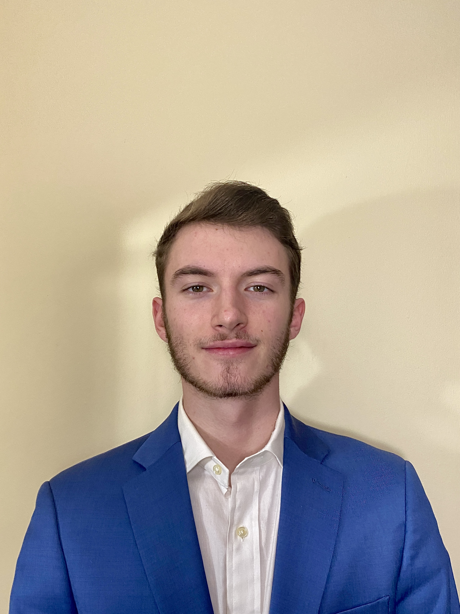

Hello! My name is Oliver Fishel and this is my website! As a sophmore sutdying User Experience Design at the University of Michigan, I took it upon myself to share my life and experiences up until this point with the world. By entering this website, you will learn a little bit more about me as well as the people I surround myself with. Feel free to explore the different tabs that will give you a closer look at what brings me joy and inspiration on a daily basis. With that being said, welcome and enjoy!

This is a quick preview of what I look like, but do not fear, there is a lot more where that came from. Ive also included an amzing picture of The Big House here at University of Michigan. I took this picture while at the maize out game against Washington on September 11th. The halftime show was incredible, with moving tirbutes to those who sacrificed themselves to protect our country and constitution on that day. I included this picture as a reminder of how precious the little things in life are. As a student here at U of M, I am eternally grateful for the oppurtunity I've been given, and want to share my experiences from before and throughout college here on my webpage. So please, dive right in!